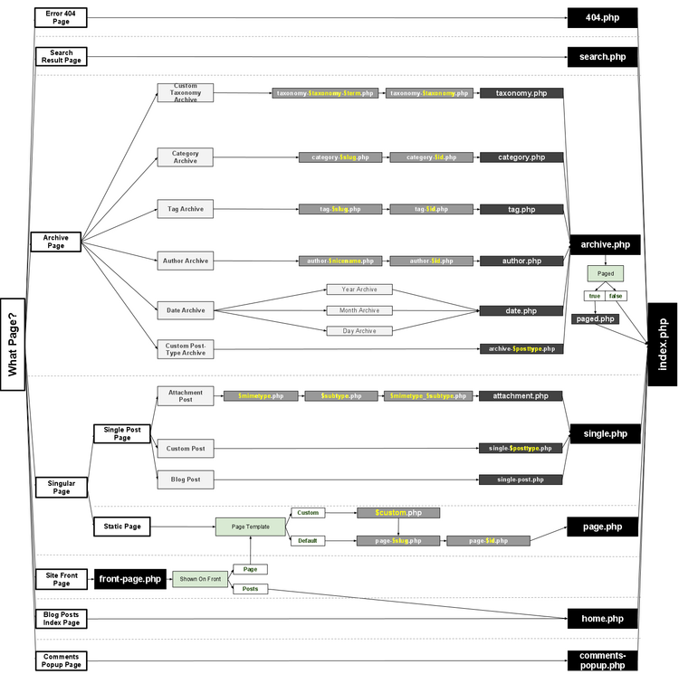

Languages: English • Français • Italiano • 日本語 한국어 • Русский • Español • Português do Brasil • (Add your language)
I template di WordPress si combinano fra di loro come i pezzi di un puzzle per generare le pagine web del vostro sito WordPress. Alcuni template (ad esempio i file di template della testata e del piè di pagina) sono utilizzati in tutte le pagine mentre altri sono utilizzati solo per specifiche condizioni.
Questo articolo cerca di rispondere alla seguente domanda:
Quale/i file utilizza WordPress quando si visualizza un certo tipo di pagina?
Dall'introduzione dei Temi in WordPress 1.5, I Templates sono diventati sempre più configurabili. Per poter sviluppare temi per WordPress è essenziale comprendere a fondo il modo in cui WordPress seleziona i file dei template per visualizzare le varie pagine del blog. Se si cerca di personalizzare un tema di WordPress già esistente, questo articolo ha lo scopo di aiutarvi a decidere quale file dei template occorre modificare.
WordPress fornisce più di una via per far corrispondere i template al tipo di query. Gli sviluppatori di temi per WordPress possono utilizzare i Tag condizionali per controllare quali template verranno utilizzati per generare una certa pagina. Alcuni temi WordPress possono non implementare tutti i file dei template descritti in questo articolo. Alcuni temi usano i tag condizionali per caricare altri file dei template. Per ulteriori informazioni si veda la pagina Tag condizionali e "Basato su query" nello sviluppo dei temi.
WordPress utilizza le informazioni della Query String — contenute in ciascun link del proprio sito web — per decidere qual template o insiemi di template verranno utilizzati per visualizzare la pagina.
Per prima cosa, WordPress fa corrispondere ciascuna Query String ad un tipo di query — decide che tipo di pagina è stata richiesta (una pagina di ricerca, una pagina di categoria, l'home page ecc.).
Quindi vengono selezionati i template — e viene generato il contenuto della pagina web — nell'ordine suggerito dalla gerarchia dei template di WordPress, in funzione di quali template sono disponibili in uno specifico Tema WordPress.
WordPress cerca, nella directory del tema corrente, file dei template con nomi specifici ed utilizza il file dei template che corrisponde per primo nella sezione di query appropriata come elencato di seguito.
Con l'eccezione del file dei template di base index.php, gli sviluppatori dei temi possono scegliere se implementare o meno un particolare file di template. Se WordPress non riesce a trovare un file di template con il nome corrispondente, passa al nome di file successivo nella gerarchia. Se WordPress non riesce a trovare nessuna file di template corrispondente alle sue necessità verrà usato il file index.php (il file di template usato per la home page del tema).
Se ad esempioil vostro blog si trova su http://example.com/blog/ ed un visitatore fa clic su un link ad una categoriadel tipo http://example.com/blog/category/mia-cat/: Ecco la sequenza che utilizza WordPress nella gerarchia dei template per cercare e generare il file corretto.
WordPress cerca un file di template nella directory del tema corrente che corrisponda all'ID di categoria.
Se un visitatoe arriva alla vostra home page a http://example.com/blog/, si verifica la seguente sequenza:
Il seguente diagramma mostra quali file di template vengono richiamati per generare una pagina di WordPress in base alla gerarchia dei template di WordPress.
 Immagine a dimensione reale (png)
Un diagramma più dettagliato, che comprende anche i tag condizionali relativi ai template e le classi CSS inserite nel body, è disponibile qui.
La sezione seguente descrive l'ordine con il quale i file dei template vengono richiamati da WordPress per ciascun tipo di query.
File dei template utilizzato per visualizzare l'indice degli articoli del blog, sia che vi sia o meno una pagina iniziale statica. Nota: nel caso di Paigina inziale del sito, il template per la Front Page ha la precedenza rispetto al template per l'indice degli articoli del blog (Home).
File dei template utilizzato per visualizzare la pagina iniziale del sito, quando la pagina iniziale mostra un indice degli articoli del bog o una pagina statica. il template per la Front Page ha la precedenza rispetto al template per l'indice degli articoli del blog (Home).
File di template utilizzato per mostrare una pagina di un singolo articolo.
File di template utilizzato per mostrare una pagina statica (post-type page)
File di template utilizzato per mostrare una pagina di indice archivio di categoria
File di template utilizzato per mostrare una pagina di indice archivio di tag
File di template utilizzato per mostrare una pagina di indice archivio per una Tassonomia personalizzata
File di template utilizzato per mostrare una pagina di indice archivio per un tipo di articolo personalizzato (Custom Post Type)
(Per mostrare in singolo tipo di articolo personalizzato si faccia riferimento alla sezione precedente Visualizzazione singolo articolo.)
File di template utilizzato per mostrare una pagina di indice archivio per un autore
File di template utilizzato per mostrare una pagina di indice archivio in base ad una data
File di template utilizzato per mostrare una pagina di indice archivio per una ricerca
File di template utilizzato per mostrare una pagina di errore Server 404
File di template utilizzato per mostrare la pagina di un singolo allegato (post-type attachment)
Il sitema di template di WordPress permette di filtrare la gerarchia. Il filtro (che si trova nella funzione get_query_template() ) utilizza il filtro di nome: "{$type}_template" dove $type è il nome del file nella gerarchia senza l'estensione .php.
Elenco completo:
Prendiamo ad esempio la gerarchia standard per gli autori:
Per aggiungere author-{role}.php prima di author.php dobbiamo manipolare la gerarchia attuale utilizzando l'hook 'author_template'. Ciò permette ad una richiesta per /author/username dove username ha il ruolo di editore di utilizzare per la visualizzazione author-editor.php se questo è presente nella directory del tema.
function author_role_template( $templates='' )
{
$author = get_queried_object();
$role=$author->roles[0];
if(!is_array($templates) && !empty($templates)) {
$templates=locate_template(array("author-$role.php",$templates),false);
}
elseif(empty($templates)) {
$templates=locate_template("author-$role.php",false);
}
else {
$new_template=locate_template(array("author-$role.php"));
if(!empty($new_template)) array_unshift($templates,$new_template);
}
return $templates;
}
add_filter( 'author_template', 'author_role_template' );
wp-includes/theme.php.wp-includes/template-loader.php.Template Hierarchy: Category Templates, Tag Templates, Taxonomy Templates, Page Templates, Post Type Templates, Author Templates, Date Templates, Search Templates, 404 Templates, Attachment Templates, Loop Templates
{kind=link}
{kind=link}